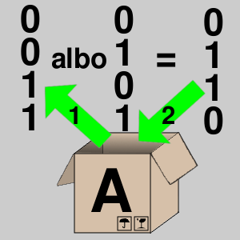
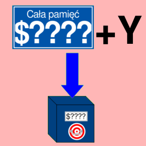
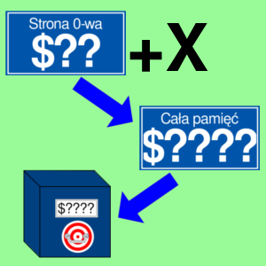
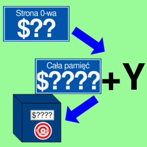

EOR
Suma logiczna wykluczająca
Opis

Operacja wykluczającej sumy logicznej, której operandami są liczba z akumulatora i liczba z pobrana z pamięci. Wynik jest zapisywany w akumulatorze.
Ta operacja w języku polskim jest nazywana także sumą modulo lub różnicą symetryczną. W wielu pozostałych asemblerach, a także pozostałych dziedzinach suma logiczna wykluczająca ma mnemonik "XOR".
Odpowiada to instrukcji w języku wysokiego poziomu: A = MEM[$??] ^ A.
Operacja wpływa na flagi: N i Z.
Tabela opkodów
| Opkod | Tryb adresowania | Czas wykonywania (cykle) |
|---|---|---|
| $49 |  |
2 |
| $45 |  |
3 |
| $55 |  |
4 |
| $4D |  |
4 |
| $5D |  |
4* |
| $59 |  | 4* |
| $41 |  | 6 |
| $51 |  | 5* |
* Rozkaz wykonuje się o jeden cykl dłużej, kiedy nastąpiło przekroczenie strony